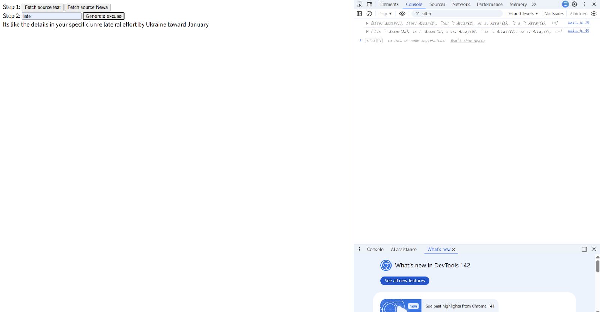

1.Unlike most language-generation tools that move forward from the input, I want to build a structure that works backward, tracing things in reverse. That’s why, when looking for an API, I chose one about excuses—because an excuse itself is a kind of reversed causal logic.
import './style.css'
let fetchButton = document.getElementById('fetchTXT')
let generateButton = document.getElementById('generateTXT')
let inputText = document.getElementById('inputText')
let outputText = document.getElementById('outputText')
let sourceURL = 'https://api.lazydesignerexcuses.com/all'
let order = 5 //n-gram number
let ngrams = {}
function fetchSourceText(){
fetch(sourceURL)
.then(response => response.json())
.then(data => {
data.forEach (item =>{
let line = item.Excuse.replace(/[-"'`,!?;.:]/g, '')
if (!line){
return
}
//console.log(line)
for(let i = order; i <= line.length; i++){
let gram = line.substring(i - order, i)
let prevChar = line.charAt(i - order - 1)
if(prevChar){
if(!ngrams[gram]){
ngrams[gram] = []
}
ngrams[gram].push(prevChar)
}
}
})
console.log(ngrams)
})
.catch(error =>{
console.error('error fetching the text:', error)
})
}
function generateText(){
let currentGram = inputText.value.substring(inputText.value.length - order)
let result = currentGram
for (let i = 0; i < 100; i++){
let possibilities = ngrams[currentGram]
if(!possibilities)break
let prev = possibilities[Math.floor(Math.random() * possibilities.length)]
result = prev + result
currentGram = result.substring(0, order)
}
outputText.textContent = result
}
fetchButton.addEventListener('click', fetchSourceText)
generateButton.addEventListener('click', generateText)
2.Then I tried to modify the earlier code by attaching content from the news API to the end of the generated prompt. My goal was to create an effect like this: I couldn’t do something because of some excuse, but I do have a piece of news to tell you.
import './style.css'
let fetchButton = document.getElementById('fetchTXT')
let fetchNewsButton = document.getElementById('fetchNEWS')
let generateButton = document.getElementById('generateTXT')
let inputText = document.getElementById('inputText')
let outputText = document.getElementById('outputText')
let outputNews = document.getElementById('outputNews')
let sourceURL = 'https://api.lazydesignerexcuses.com/all'
let newsURL = 'https://newsapi.org/v2/top-headlines?country=us&apiKey=34b58ba9d850474b9a78933fee36a735'
let order = 4
let ngrams = {}
function fetchSourceText() {
fetch(sourceURL)
.then(response => response.json())
.then(data => {
data.forEach(item => {
let line = item.Excuse.replace(/[-#()*"'`’,!?;.:]/g, '')
if (!line) return
for (let i = order; i <= line.length; i++) {
let gram = line.substring(i - order, i)
let prevChar = line.charAt(i - order - 1)
if (prevChar) {
if (!ngrams[gram]) {
ngrams[gram] = []
}
ngrams[gram].push(prevChar)
}
}
})
console.log(ngrams)
})
.catch(error => {
console.error('error fetching the text:', error)
})
}
function fetchNewsText() {
fetch(newsURL)
.then(response => response.json())
.then(data => {
data.forEach(articles => {
articles.forEach(article => {
article.forEach(title => {
title = title.replace(/[-#()*"'`’,!?;.:]/g, '')
if (!title) return
for (let i = 0; i <= line.length - order; i++) {
let gram = line.substring(i, i + order)
if (!ngrams[gram]) {
ngrams[gram] = []
}
ngrams[gram].push(line.charAt(i + order))
}
})
})
})
console.log(ngrams)
})
.catch(error => {
console.error('error fetching the text:', error)
})
}
function generateText() {
let currentGram = inputText.value.substring(inputText.value.length - order)
let result = currentGram
for (let i = 0; i < 100; i++) {
let possibilities = ngrams[currentGram]
if (!possibilities) break
let prev = possibilities[Math.floor(Math.random() * possibilities.length)]
result = prev + result
currentGram = result.substring(0, order)
}
outputText.textContent = result
}
fetchButton.addEventListener('click', fetchSourceText)
fetchNewsButton.addEventListener('click', fetchNewsText)
generateButton.addEventListener('click', generateText)
3.The current effect of text generator.
